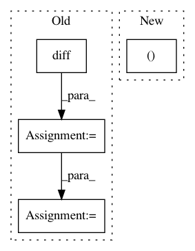

34e7e918bd4fc09f643e8bb448e875a9bcb7e841,linearmodels/panel/data.py,PanelData,first_difference,#PanelData#,253
Before Change
diffs : PanelData
Differenced values
diffs = self._frame.diff(1).iloc[1:]
elabels = self._frame.index.labels[0]
same = elabels[1:] == elabels[:-1]
diffs = diffs.loc[same]
diffs = self._minimize_multiindex(diffs)
return PanelData(diffs)
@staticmethod
After Change
Differenced values
diffs = self.panel.values
diffs = diffs[:,1:] -diffs[:,:-1]
diffs = pd.Panel(diffs, items=self.vars,
major_axis=self.time[1:],
minor_axis=self.entities)
In pattern: SUPERPATTERN
Frequency: 3
Non-data size: 4
Instances
Project Name: bashtage/linearmodels
Commit Name: 34e7e918bd4fc09f643e8bb448e875a9bcb7e841
Time: 2017-03-29
Author: kevin.k.sheppard@gmail.com
File Name: linearmodels/panel/data.py
Class Name: PanelData
Method Name: first_difference
Project Name: scipy/scipy
Commit Name: da9516b689891a227f67420c38849ba2f40367e5
Time: 2014-01-28
Author: joel.nothman@gmail.com
File Name: scipy/sparse/data.py
Class Name: _minmax_mixin
Method Name: _min_or_max_axis
Project Name: brainiak/brainiak
Commit Name: 9844e657a565158d7e46b0900270b21fbcc38d82
Time: 2017-08-09
Author: lcnature@users.noreply.github.com
File Name: brainiak/reprsimil/brsa.py
Class Name: BRSA
Method Name: _prepare_DF